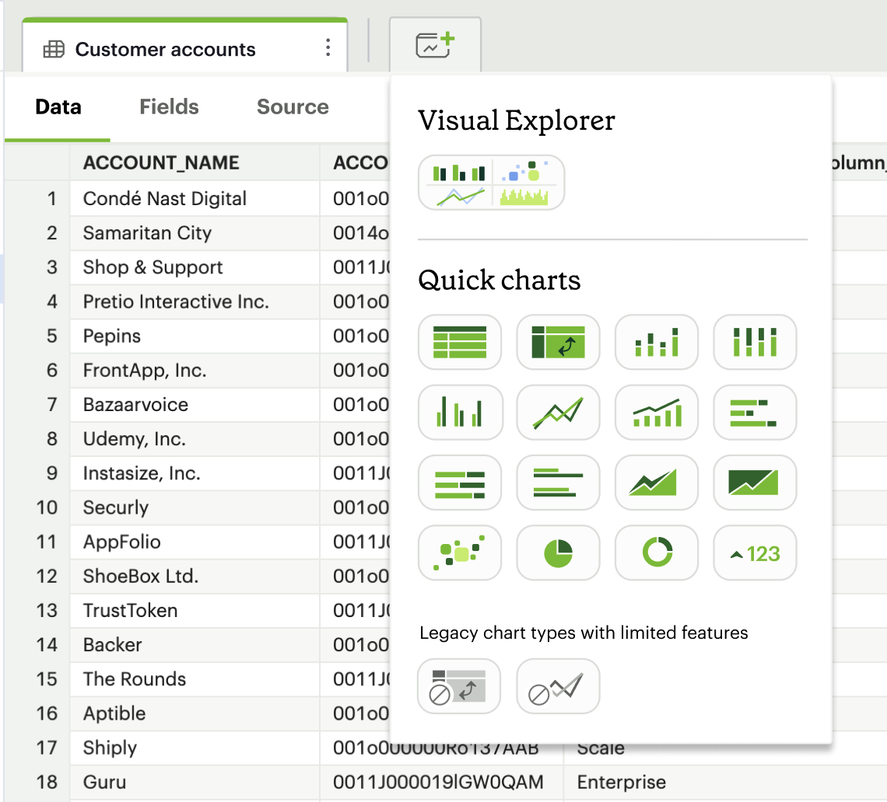
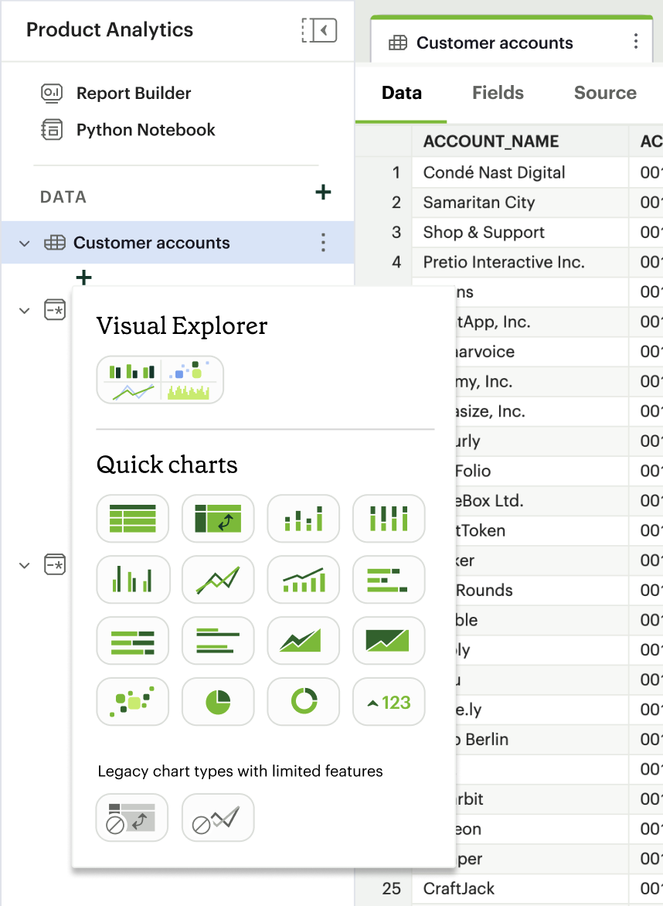

Mode Notebook: Effortless Data Visualization from Python & R
Company
Mode
Team
Team of 1 PM, 1 designer, 1 researcher, 2 front-end engineers, and 3 back-end engineers
My Role
Interaction Designer
Timeline
October 2022 — January 2023 (MVP)
Tools
Figma
Background
Mode is a tool offering a central hub for an organization’s analysis, uniting data teams and business teams around data to drive business outcomes. As the lead designer on the Notebooks team, I drove design decisions for the Mode Notebook product area. The Notebook offers an intuitive interface for writing powerful Python and R to analyze data.
Even though Mode offers a powerful data visualization tool with the Quick Charts builder and Data Explorer, this tool has only been available for data created through SQL queries. As we have learned about growing interest from users throughout the year, the team decided to embark on an initiative to bridge the Notebook with the visualization tool.
How might we allow users to import Notebook dataframes into the chart builder to create visualizations?
Process
Discovery
To deepen our understanding of the problem, we first conducted 5 user interviews with experienced Mode Notebook users. The interview questions focused on participants’ general usage and preference with using data from the Notebook.
The analyzed findings confirmed some of our assumptions and reiterated on the user requests that we’d consistently got prior to this project. Our most important conclusions were:
3/5 participants often use the notebook to create data visualization.
3/5 participants have always wanted a no-code way to quickly generate visuals; they wish they were able to access Notebook data in the Mode visualization tool.
All participants prefer a workflow where dataframes are imported into the chart builder, as opposed to having a visualization interface within the Notebook.
Ideation
With the findings from our discovery stage, I started crafting the solution with low-fidelity wireframes. In this phase, we focused on the user flow from creating a dataframe in a notebook to making it available for visualization, since this is the key interaction of this entire process.
We considered the following approaches based on the different ways data is connected within the Mode ecosystem:
Early wireframes for different user flows (from top to bottom):
- Publishing a dataframe from the Notebook as a local dataset
- Exporting the dataframe as a local data connection to make it available in the SQL editor, and subsequently accessible in the chart builder
- Enabling native visualization from a dataframe within the Notebook
After discussion on usability and technicality, we eventually moved forward with the concept of exporting dataframes from the Notebook to make them available in the visualization builder. This is akin to concept 1 as described above, but the structure of the exported data will be kept as a dataframe, which allows for more efficient technical transition between the notebook and chart builder.
After we finalized the overall user flow, I started creating more polished mockups to add higher fidelity to details such as button labels, icons, and tooltips.
During this stage, we specifically had a lot of discussion on the language of the call-to-action button, i.e. the key interaction that makes the dataframe available in the chart builder. We wanted to ensure the label to stay consistent with Mode's product writing guidelines and terminology, while intuitively conveying the interaction.
We temporarily settled on “export,” as a placeholder, but this label required further discussion, as it could insinuate taking the data outside of the Mode product altogether.
MVP Design
After rounds of iteration, we finalized an MVP design, which we intended to use for both an initial round of user testing and MVP implementation. This design focuses on 3 main aspects of the experience: the creation flow, removal flow, and data states.
With the key findings, we discussed among our teams to iterate and incorporate necessary changes into our design system.
Creation Flow
From within a notebook cell, the user can click “Export output” to choose “Export as dataframe.” This quickly exports their data output from a cell as a dataframe, which would in turn make it available for the chart builder.

They would then be prompted to name the exported dataframe, and see it appear on the left navbar.
The ability to name a dataframe helps users distinguish among different dataframes created from the same notebook.

Clicking on the dataframe name in the navbar opens the dataframe view, which offers 3 tabs: data, fields, and source. Each tab offers a unique aspect of the dataframe, helping users quickly determine the available data and source code.
From this dataframe view, the user can easily click on the new chart icon on the tab bar to see visualization options and get to the chart builder.
Alternatively, they can also click on the add icon below the dataframe name in the sidebar to see the same options.
For example, one could choose to create a pivot table from the exported dataframe and manipulate the data similarly to how they could with a SQL query in Mode.

Removal Flow
To ensure flexibility for the workflow, we offer users 2 ways to remove an exported dataframe. They can:
1. Remove it via a context menu in the left navbar
2. Remove it with the “Export output” button on the Notebook toolbar. The “Export output as dataframe” acts as a toggle that allows an export or remove action based on an output’s current state.
Data States
To help users quickly identify an output cell’s state and avoid unnecessary errors, we included icon identifiers and tooltip explainers throughout the experience.
Each output cell whose dataframe has been added to the chart builder would display an icon associated with its exported state.
When the output cell has an error, which could result from a code or runtime issue, the exported dataframe automatically falls back to the last successful run. This is to help minimize disruption in a user's workflow and prevent errors in dependencies of the exported dataframe.
In this case, a warning icon, coupled with a tooltip explainer, offers clear guidance for users to clearly understand this state.
Next Steps
I left Mode shortly after the design for the MVP was finalized, so I unfortunately wasn't able to witness this project being fully realized. At the time, our next steps were to implement the MVP and conduct user testing with a prototype of this design.
Our user testing plan was to conduct cognitive walkthrough sessions with Mode Notebook users and use the think-aloud method to identify strengths and weaknesses of the MVP. We planned to give participants scenarios with tasks related to exporting a dataframe from a notebook and using the available data to build charts in the visualization tool.
With the findings from the research, we aimed to polish the user flow and ensure a smooth learning curve for existing Mode users, since it would be a new experience within the Mode product. As this feature has been an ask from many customers, I have high hopes that it, once fully implemented, will eventually serve as a powerful tool for analysts to bring data to life.